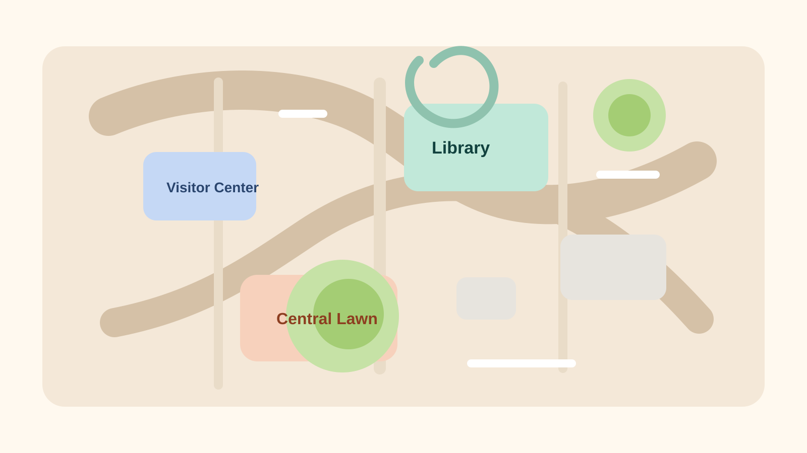

XJTLU Campus Guide
先选择页面语言，然后进入身份选择。系统会在地图页获取实时定位，并在你到达景点后自动打开 AR 讲解页面。
Choose Your Identity
选择学生或访客后，进入校园地图与实时定位页面。
请先选择身份。
XJTLU SIP Campus

01
点击下方按钮后，网页会请求定位权限并检测你是否靠近景点。
02
当你到达西浦图书馆、西浦博物馆或南校区体育中心时，系统会自动跳转到 AR 讲解页面。
AR Storytelling
Now Playing
图书馆位于中心楼 3 至 10 层，是支持学习、教学与研究的重要空间。